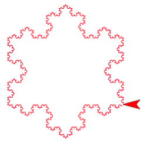
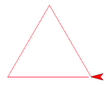
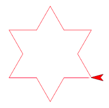
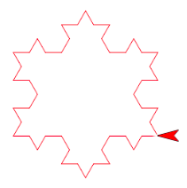
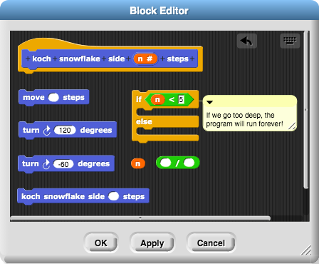

Koch Snowflake
The Koch snowflake is a very special shape. Its area is finite, but its perimeter is infinitely long. Can you draw one in Snap?
-
Click here to load a starter project.
-
Make a script to draw a triangle with 3 equal sides.
 -
Duplicate your triangle script, and change it to make this 12-sided polygon (dodecagon).
 -
Go one step farther. Can you make this 48-sided shape?
 -
How would you keep going? You can do it by hand. Or, you can create a new block that uses itself in its definition. This is called recursion. In the starter project, open the "koch snowflake side" block in the block editor. You will find the below code snippets: assemble them all together to make a very intricate snowflake.
 -
Here is another example of recursion, called the Droste effect. Can you draw this in Snap?

Credits
Content adapted from BJC U7L2 Recursion Projects.